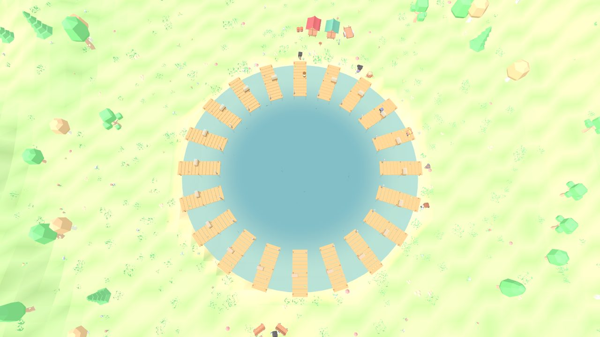

낚멍 v12 시안
아래 두 가지는 게임에 아직 적용하지 않은 시안이에요. 모두 실제 게임 화면에서 캡처했어요.
👑 서버 1~3위 닉네임 표시 (4종)
어종별 주간 랭킹 1~3위 유저를 월드에서 알아볼 수 있게 하는 표시예요. (예시: 물멍러 1위 · 붕어왕 2위 · 노을소녀 3위)
🛶 데크 30개 배치 (3종)
현재 호수(반지름 24, 데크 20개)를 기준으로 비교했어요. 모든 시안이 데크·어항을 인스턴싱으로 그려서 데크가 늘어도 draw call이 거의 같아요.
현재 · 데크 20개 (반지름 24)

| 시안 | 호수 반지름 | 데크 간격(입구 기준) | 한 바퀴 걷기 | draw calls / 삼각형 (PC·모바일) | 장점 | 주의점 |
|---|---|---|---|---|---|---|
| A 큰 원형 | 24 → 32 (+33%) | 약 7.3m (현재 8.4m) | 약 +30% | 89·84 / 133k | 지금 구조 그대로 확장 · 버그 위험 최소 | 건너편 데크가 멀어져 소셜감↓, 이동 시간↑ |
| B 지그재그 | 24 → 26 (+8%) | 약 6m (안/밖 교차) | 약 +8% | 89·84 / 134k | 호수를 거의 안 넓혀도 30개 · 이동 거리 유지 | 바깥 데크는 낚시 지점이 2.6m 뒤 · 촘촘해 보일 수 있음 |
| C 만(灣)형 6마을 | 24 → 29 (+21%) | 마을 안 5m · 마을 사이 빈터 | 약 +20% | 104·87 / 135k | 마을(5데크)별 친구 모임 · 빈터에 상점·캠프파이어·이벤트 | 상점·캠프파이어 위치 재배치 필요 |
카메라: 세 시안 모두 지금 3인칭 카메라를 그대로 써도 옆 데크가 화면에 2~3개 보여요. 모바일 성능: 데크·랜턴·어항이 인스턴싱이라 삼각형은 +2% 이내예요. 봇 수만 늘리지 않으면 프레임 차이가 없어요(이 테스트 환경은 소프트웨어 렌더링이라 모든 시안이 약 20 FPS로 같게 나와요).